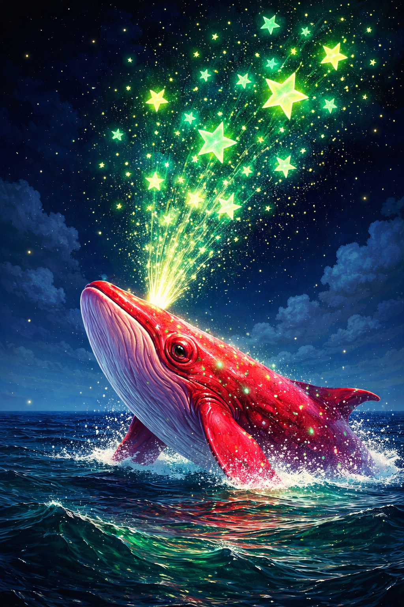
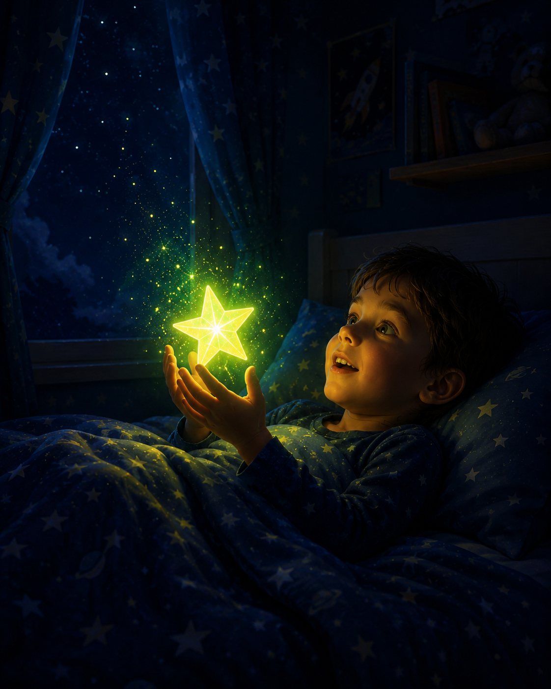

Far out in the quiet ocean, where
Each night, when the world grew still and the wind softened, the whale would rise slowly from the deep. Not with a splash or a rush—but with a calm, steady motion, like breathing. As it reached the surface, it would lift its head toward the sky… …and from its blowhole, a soft stream of glowing green stars would drift upward. Not loud. Not bright enough to wake anyone. Just gentle. The stars didn’t fall. They floated. They spread across the sky like tiny whispers of light, finding their place among the constellations. Some settled near the moon. Others lingered above quiet forests, snowy mountains, and sleeping towns. And sometimes… one would drift just a little lower.
On those nights, if you were very still—lying in bed, eyes half closed—you might notice a soft green glow near your window.
Not enough to startle you. Just enough to make you feel safe. That was one of the whale’s stars. The whale didn’t send them by accident. It sent them to anyone who needed a little peace. To someone who had a long day. To someone learning something new. To someone trying their best, even when it was hard. The whale never rushed. It knew that everything—waves, stars, and even people—found their way in time.
After sending its stars into the sky, the whale would slowly sink back into the ocean. The water would close around it gently. And the night would grow quiet again. But the stars stayed. They watched over everything. And if you listened closely, you might almost feel the ocean breathing beneath them… steady… calm… and endless. So as you rest tonight, just remember: Somewhere out there, beneath the dark, peaceful water… the red whale is rising again… sending a few more stars your way.
